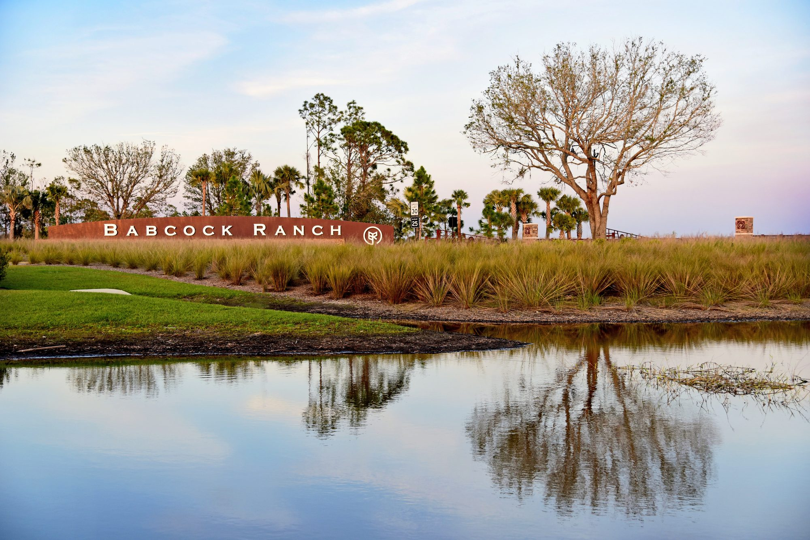

News
Coverage
A running list of press on the program and its founders, newest first.
Work in progress
Seeded with the coverage the Finn team shared. New links get added as they're secured.

A running list of press on the program and its founders, newest first.
Seeded with the coverage the Finn team shared. New links get added as they're secured.
